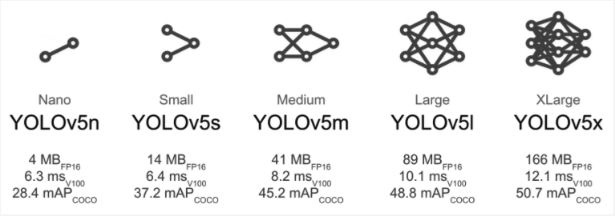

MAS.Vision 视觉
OpenCV
相关资料：
OpenCV官方文档，提供了详尽的API文档和教程，是学习和应用OpenCV的重要资源： OpenCV DocumentationOpenCV项目地址：OpenCV，官网：OpenCV OrgOpenCvSharp4在.NET环境下使用的 OpenCV 库的封装。项目地址：OpenCvSharp- 标注工具：CVAT
- 部署容器：Docker Desktop
- 目标检测算法模型：yolov5
- 检查模型的输入和输出工具：Netron
Microsoft Azure Global Edition技术文档：ONNX- 关于
fbgemm.dll" or one of its dependencies的问题：Stackoverflow
以下因商业版弃用：
Emgu CV.NET的 OpenCV 封装，C#和.NET环境下的应用程序使用 OpenCV 功能文档：Emgu CV WikiEmgu CV项目地址：Emgu CV，官网：Emgu CV Org
应用场景区分
| 功能/场景 | 目标检测算法模型 + OpenCV | 仅 OpenCV |
|---|---|---|
| 算法复杂度 | 高，需要深度学习 | 高，传统图像处理 |
| 数据集 | 大量标注数据 | 可能不需要或数据量较少 |
| 对象检测 | 高精度检测多种对象，实时分析视频流 | 传统方法，如模板匹配、特征检测等 |
| 特征提取 | 可用于目标检测的特征提取 | SIFT、SURF等传统特征提取 |
| 运动追踪 | 追踪视频中多个动态对象，高效识别对象变化 | 可进行简单运动追踪，如背景消除和光流法 |
| 人脸识别 | 精确识别并分析人脸特征，支持复杂场景 | 基本人脸检测，不含深度学习增强 |
| 物体分类 | 实时识别和分类多种对象类型，支持大规模数据集 | 不支持深度学习的分类，限于预定义或简单模式的识别 |
| 图像处理基础 | 完全支持 | 完全支持 |
| 动态场景分析 | 分析并理解视频内容中的复杂动态场景 | 有限的动态场景分析能力 |
| 处理速度与资源消耗 | 对硬件要求较高，需要更强的计算能力 | 较低的资源消耗，适用于资源受限环境 |
| 开发与集成复杂度 | 更高的开发难度，需要更多的调试和优化 | 相对简单，易于快速开发和部署 |
| 复杂场景 | 鲁棒性强，适用于复杂场景 | 对于复杂场景可能效果较差 |
训练基本流程
样本准备
- 需要收集到足够多的有关特定物体的图像数据
- 确保在不同的光照、角度和背景条件下拍摄，以提高模型的泛化能力
数据预处理
- 使用标注工具 CVAT 对图像中的物体进行标注，标出物体的边界框和类别
- 完成后导出格式
YOLO
选择模型
- YOLOv5 转到
Releases选择模型下载

模型训练
打开命令行（已安装python）
- 安装 PyTorch
pip install torch torchvision
- 克隆
YOLOv5仓库
git clone https://github.com/ultralytics/yolov5
- 进入项目根目录
cd yolov5
- 安装
YOLOv5所需的其他依赖
pip install -r requirements.txt
- 创建图像和标注目录
mkdir -p data/images/train/分类/
mkdir -p data/images/val/分类/
mkdir -p data/labels/train/分类/
mkdir -p data/labels/val/分类/
- 移动训练数据（完成步骤 3，将文件移动到 yolov5 根目录执行以下命令）
mv obj_Train_data/*.jpg data/images/train/分类/
mv obj_Train_data/*.txt data/labels/train/分类/
- 移动验证数据
mv obj_Validation_data/*.jpg data/images/val/分类/
mv obj_Validation_data/*.txt data/labels/val/分类/
在 yolov5/data 目录下，创建一个名为 custom_data.yaml 的文件，并填写以下内容
train: data/images/train/分类/
val: data/images/val/分类/
nc: 2 # 类别数，根据obj.names中定义的类别数量
names: ['类别1', '类别2'] # 根据obj.names文件中的类别名称修改
开始训练
- --img 640 图像大小；--batch 批次；--epochs 训练周期；--weights 预训练权重；--single-cls 单类别检测，有助于优化训练过程
python train.py --img 640 --batch 16 --epochs 50 --data data/custom_data.yaml --weights yolov5m.pt --single-cls
训练过程中，可以新建命令行，导航到 yolov5 根目录，执行以下命令
- 安装 tensorboard
pip install tensorboard
可视化训练过程中的各种指标，然后启动，在浏览器中访问这个地址来查看训练进度
tensorboard --logdir runs/train
损失值:
box_loss: 定位损失，用于衡量模型预测的边界框与实际边界框的偏差
obj_loss: 目标损失，用于衡量模型识别目标的能力
cls_loss: 分类损失，用于分类任务
指标：
precision: 精确率，用于衡量模型预测的正样本中实际为正样本的比例
recall: 召回率，用于衡量模型对所有正样本的检测能力
mAP: 平均精度，用于综合衡量模型的检测性能
等待训练完成后，将模型导出为 ONNX（Open Neural Network Exchange）
- 用于优化和简化ONNX模型
pip install onnx-simplifier
- 执行导出
python export.py --weights runs/train/exp2/weights/best.pt --img 640 --batch 1 --dynamic --simplify --include onnx
模型测试与优化
使用导出的 ONNX 模型在一些测试数据上运行检测，以评估模型的性能和准确性，通过 YOLOv5 的 detect.py 脚本进行，指定 ONNX 模型作为权重参数
- 用于在不同设备上运行 ONNX 模型
pip install onnxruntime
- 运行检测脚本
python detect.py --weights runs/train/exp2/weights/best.onnx --img 640 --conf 0.25 --source data/images/val
视频流进行实时对象检测测试
- 如
opencv-python如果未安装
pip install opencv-python
- 启动
YOLOv5使用摄像头进行实时检测
python detect.py --weights runs/train/exp2/weights/best.onnx --conf 0.25 --source 0
对训练好的模型进行剪枝、量化等优化，减小模型大小，稍微~提高推理速度
模型部署
- 加载训练好的
ONNX（Open Neural Network Exchange）模型，集成到.NET应用程序中，使其能够对新的图像进行实时或离线预测
设计需求
v2024-08-15
任务识别及技术实现：
1.对于物体方向的确定
边缘检测为后续的轮廓分析和模板匹配提供基础，强调物体的结构边界轮廓分析通过找到物体的最小外接矩形，可以通过矩形的长宽比和角度来判断物体是否处于正确的方向几何形状匹配物体有特定的预期形状，通过匹配来确定其方向、分析图像的几何属性比较轮廓与预设模板之间的相似度方向梯度直方图更复杂的物体识别和方向判断，可以提取特征向量来描述物体在各个方向上的边缘强度和方向模板匹配基于整个图像的像素强度进行匹配，比较当前图像与模板的相似度
v2024-07-31
概述
主要任务识别：
1.在传送带上经过的物体
- 物体类型
- 物体方向
- 计数递增
- 物体数量
例如：手机、鸡蛋、电池
预期效果：
相机参数
分辨率：
二选一
1080p(1920x1080（Full HD）)可以确保足够的图像细节，但会增加计算量720p(1280x720（HD）)可以保证图像的清晰度，又能加快图像处理速度
帧率：
- 不低于
30 fps，每秒至少可以处理30张图片，满足一般生产线的速度要求
感光元件：
- 一般1/2.8英寸或1/3英寸的
CMOS感光元件已经足够用于上述任务，能够在保证成本的同时提供良好的图像质量
接口类型：
USB 3.0提供高数据传输速率，适合高分辨率和高帧率的图像传输，且普遍兼容性好
镜头焦距：
- 根据拍摄距离选择，
35mm或50mm适用于 1-2 米的距离，16mm至25mm适用于近距离（30cm至1m）拍摄
光圈：
- 随意或者默认，如果场景的照明条件变化莫测就要考虑
触发模式：
非必需，可按需选择
- 无触发模式，开启相机即实时捕获检测
- 有触发模式，软硬件触发拍摄，可以进一步提高图像捕捉的精确性
软件兼容性：
- Windows 平台